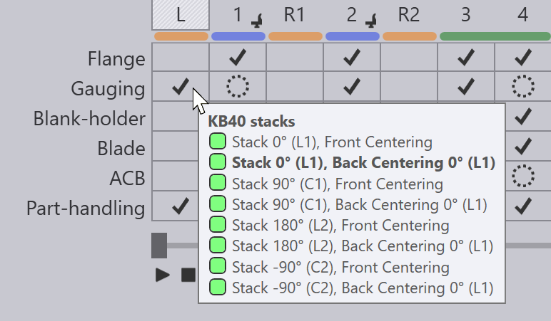

Edit pemuatan
Aktivitas Pemuatan untuk penekuk panel otomatis (seperti TBC-7030 atau TBC-7020) dapat diedit dengan mengklik dua kali pada sel pemuatan di navigator di bagian atas. Ini adalah sel yang diberi stiker L. Klik pertama akan memilih aktivitas pemuatan, dan klik kedua akan memunculkan panel pemuatan.

7030 (Pemuatan Depan)
Panel Pemuatan untuk mesin 7030 dengan pemuatan depan terlihat seperti ini:

-
Pengaturan Sudut pemusat menentukan orientasi komponen selama aktivitas pemusatan. Perhatikan bahwa ini adalah sisi yang menghadap ke mesin, dan oleh karena itu tepat berlawanan dengan sisi yang sebenarnya mengacu pada frontgauge. Dalam contoh ini, sisi C2 menghadap ke mesin (dan sisi C1 pada +90 derajat digunakan untuk stopper). Pengaturan ini menampilkan daftar orientasi yang sesuai untuk pemusatan awal.
-
Selektor Jenis gripper suction cup memungkinkan Anda memilih apakah komponen akan diambil menggunakan vakum atau menggunakan tang belakang. (Ini ditampilkan hanya jika kedua pilihan tersedia. Beberapa komponen akan terlalu kecil untuk diambil oleh vacuum gripper, dan beberapa komponen akan terlalu besar untuk diambil oleh tang belakang).
-
Slider Simulasikan di bagian bawah dapat digunakan untuk menyimulasikan berbagai langkah proses pemusatan awal.
Area Penanganan
Area ini mengatur posisi putaran dan opsi penanganan lainnya selama siklus pemusatan.
-
Pengaturan Rotor (Z, X) mengontrol posisi rotor (posisi pusat putaran), dan ini diukur relatif terhadap pusat komponen dalam orientasi pemusatan.
-
Klik Perluas untuk menggunakan pusat putaran yang sama untuk pemrosesan semua sisi. Biasanya, TecZone Fold akan mencoba mengoptimalkan pusat putaran untuk meminimalkan jumlah putaran ganda yang diperlukan. Namun, jika Anda menyesuaikan pusat putaran secara manual menggunakan pengaturan di atas, Anda dapat menggunakan tombol ini untuk mencoba pengoptimalan lebih lanjut.
-
Pengaturan Kecepatan % mengontrol kecepatan putaran (sebagai persentase dari kecepatan maksimum yang mungkin).[1] === Area Mengukur Area yang dapat dilipat ini memungkinkan Anda untuk mengganti berbagai posisi stopper.
-
Pengaturan Hitung secara otomatis dapat digunakan untuk beralih antara penempatan stopper yang berbeda. Tergantung pada geometri komponen, mungkin ada beberapa lokasi di tepi komponen tempat berbagai jenis penempatan stopper sudut atau notch dapat dilakukan. Mengklik tombol ini berulang kali akan menampilkan semua opsi ini secara bergantian. (Saat Anda melakukan ini, Anda akan melihat posisi stopper yang sebenarnya diperbarui di area Posisi Halus).
-
Pengaturan Jarak digunakan untuk menambahkan celah tambahan (pada arah Z) di antara stopper. Ini dapat digunakan untuk memudahkan stopper pada komponen yang mungkin tidak dapat dipangkas dengan ukuran yang tepat.
Area Posisi yang baik
Bagian yang dapat dilipat ini memungkinkan Anda mengedit posisi stopper secara manual. Biasanya hal ini jarang diperlukan - dalam kebanyakan kasus, pemilihan posisi stopper awal sudah optimal. Dan dalam situasi lain, beberapa klik pada tombol Hitung secara otomatis yang disebutkan di atas akan memosisikan stopper dengan benar. Pengaturan Posisi yang baik hanya untuk kasus yang jarang terjadi atau geometri yang tidak biasa di mana TecZone Fold tidak dapat menemukan solusi stopper apa pun.
-
Pengaturan Kiri (Z, X) memungkinkan Anda mengontrol posisi stopper kiri. Posisi Z diukur dari garis tengah, sedangkan posisi X diukur dari tepi komponen pada arah X. Saat Anda menyesuaikan pengaturan ini, stopper akan bergerak, dan Anda mungkin melihat benturan, atau kondisi kegagalan stopper tidak terpasang.
-
Pengaturan Kanan (Z, X) mengontrol posisi stopper kanan.
-
Indikasi Dipangkas pada tampilan akan beralih antara Dipangkas, Tidak Dipangkas, atau Diagonal untuk menunjukkan jenis stopper yang sedang digunakan.
7030 + KB40 (Pemuatan Depan/Belakang)
Untuk 7030 yang dilengkapi dengan KB40, ada lebih banyak opsi yang tersedia selama pemuatan:

-
Gunakan pengaturan Sudut tumpukan untuk memilih orientasi tertentu dari komponen pada palet KB40. Anda kemudian dapat mengatur mode pemuatan (depan atau belakang) dan besaran sudut pemusatan untuk sudut tumpukan tertentu. Program NC (XML) yang dibuat oleh TecZone Fold memiliki pengaturan pemusatan untuk setiap besaran sudut tumpukan yang tertanam di dalamnya. Tergantung pada besaran sudut tumpukan aktual, pengaturan yang sesuai akan digunakan. Anda dapat memeriksa semua besaran sudut tumpukan yang diprogram dengan menunjuk ke sel Stopper:
 -
Pengaturan Mode loading digunakan untuk memilih antara mode Pemusatan belakang dan Pemusatan depan.
-
Pengaturan Sudut pemusat digunakan untuk memilih orientasi komponen selama pemusatan awal. Jika mode pemuatan diatur ke pemusatan depan, besaran sudut pemusatan sama dengan besaran sudut tumpukan (karena tidak ada putaran yang dilakukan sebelum komponen didorong ke frontgauge). Jika mode pemuatan diatur ke pemusatan belakang, besaran sudut pemusatan adalah salah satu dari berikut ini:
-
Besaran sudut tumpukan : komponen dipusatkan terlebih dahulu, kemudian ditarik ke belakang dan diputar ke orientasi sisi awal.
-
Besaran sudut sisi pertama : komponen diputar ke orientasi yang sama dengan orientasi sisi awal sebelum pemusatan.
-
Area Penanganan, Mengukur, dan Posisi yang baik mirip dengan area yang sesuai pada 7030 (lihat area di atas), kecuali bahwa area tersebut mungkin mengacu pada posisi backgauge finger atau frontgauge (tergantung pada pengaturan mode Pemuatan).
7020 (Pemusatan Ergo)
Pada penekuk panel 7020, tidak ada frontgauge. Pemusatan awal dilakukan terhadap stopper belakang, dan panel akan terlihat seperti ini:

Pengaturan Sudut pemusat digunakan untuk memilih orientasi komponen selama pemusatan awal. Hal ini dapat berbeda dari orientasi sisi pertama - dalam hal ini, komponen dipusatkan, kemudian ditarik kembali dan diputar sebelum sisi pertama diproses.
Area Pemusatan ergo
Area ini digunakan untuk memilih apakah pemusatan ergonomis diaktifkan, dan A kemudian digunakan untuk memprogram pemusatan ergonomis.
-
Jika pengaturan Beban ergonomis ditetapkan ke <No>, pemusatan ergonomis tidak akan terjadi. Komponen dimuat dengan stopper di bagian tengah (dalam posisi pemrosesan). Jika ini diatur ke Kiri atau Kanan, siklus pemusatan ergonomis diprogram.
-
Gripper claw pemuatan memilih salah satu dari dua tang yang digunakan untuk mencengkeram komponen dan menariknya ke tengah (tang lainnya digunakan untuk mereferensikan sudut komponen). Biasanya, jika pemusatan ergonomis terjadi di sisi kiri, tang kanan digunakan untuk mencengkeram, dan sebaliknya.
-
Pengaturan Kanan Z (atau Kiri Z) mengontrol posisi tang pencengkeram ini. Saat Anda menggesernya di sepanjang komponen, posisi X tang akan secara otomatis disesuaikan sehingga dapat mencengkeram tepi depan komponen.
-
Sakelar Regrip dengan keduanya dapat digunakan untuk memberikan stabilitas yang lebih baik selama pengangkutan komponen ke bagian tengah mesin. Jika ini diaktifkan, tang lainnya juga digunakan untuk mencengkeram tepi komponen saat ditarik ke dalam mesin.
-
Pengaturan Regrip Z (hanya ditampilkan jika Pencengkeram Ulang dengan kedua sakelar aktif), mengatur posisi tang kedua saat mencengkeram komponen.
Area Penanganan
Area ini hampir sama dengan area penanganan pada mesin 7030.
-
Pengaturan Penanganan digunakan untuk memilih apakah komponen akan dicengkeram dengan manipulator vakum (X3) atau dengan clamp putar (X2/X4) selama siklus pemusatan.
-
Rotor (Z, X) adalah posisi clamp putar (relatif terhadap pusat komponen) saat komponen ditahan/diputar selama siklus pemusatan. Jika sisi tersebut kemudian diproses menggunakan clamp putar (berdasarkan Cengkeram dengan pengaturan di atas), ini juga merupakan posisi di mana clamp menahan komponen selama pemrosesan sisi.
Pengaturan Mengukur dan Posisi yang baik mirip dengan yang digunakan untuk 7030 (lihat area di atas), kecuali bahwa sekarang pengaturan tersebut mengontrol posisi backgauge finger, bukan frontgauge.